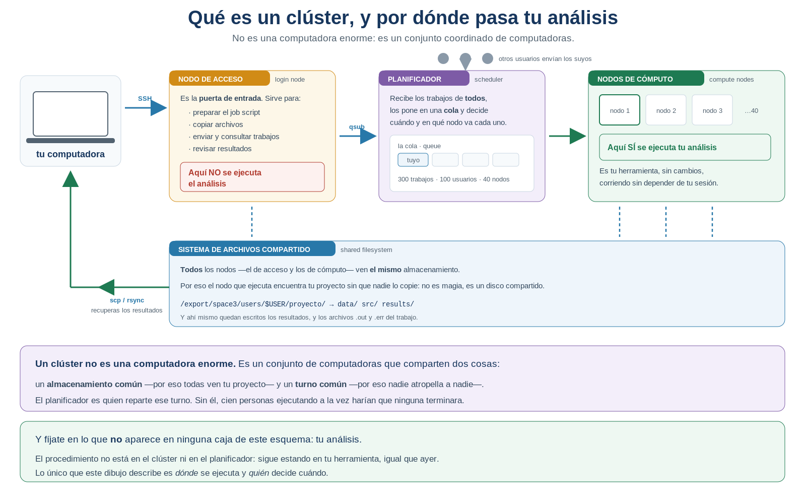
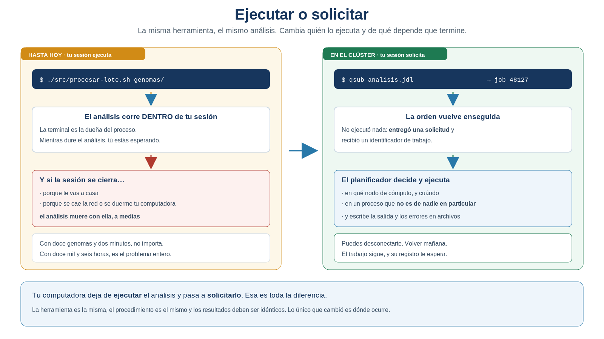
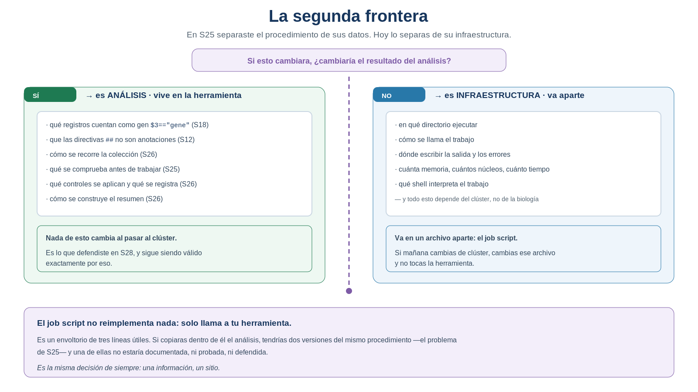
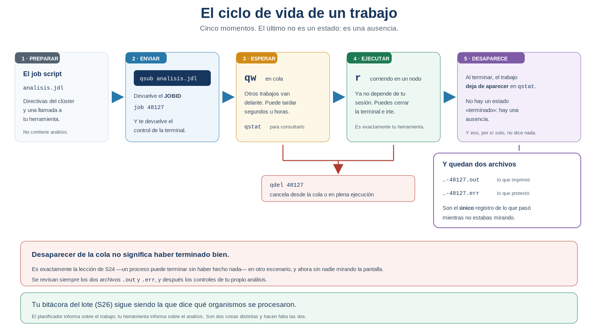
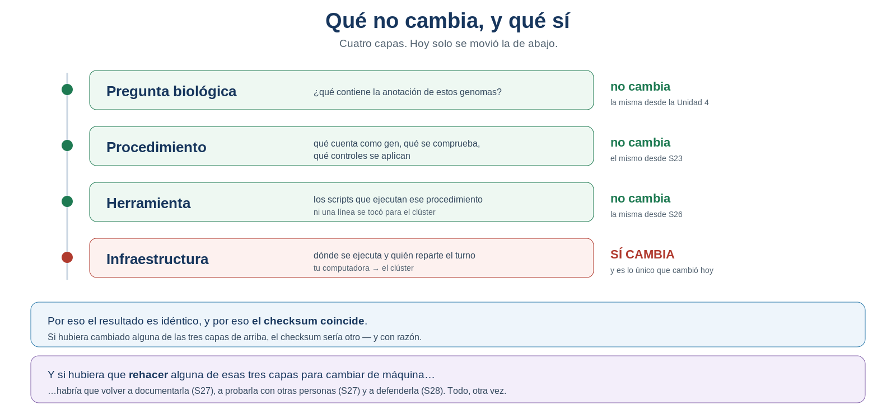

S29 — Escalar: la misma herramienta, otra infraestructura
Antes de clase ejecutarás tu herramienta localmente, medirás cuánto tarda y escribirás —sin enviarlo— el archivo que pedirá su ejecución en el clúster. Durante el taller enviarás ese trabajo, lo monitorearás, cancelarás uno a propósito y recuperarás los resultados. Después compararás lo que salió en tu computadora con lo que salió en el clúster, y responderás la única pregunta que importa hoy: ¿cambió algo del análisis?
Es la última sesión de la Unidad 5.
Ficha del módulo
| Elemento | Descripción |
|---|---|
| Sesión | S29, 2 horas |
| Unidad | U5. Automatización de análisis bioinformáticos con Shell — cierre |
| Competencia principal | B. Dominio del entorno Unix y del cómputo científico |
| Competencias integradas | E. Automatización y scripting; A. Trabajo reproducible; G. Uso responsable de la IA |
| Propósito | Ejecutar la herramienta ya construida sobre infraestructura compartida, sin modificar el procedimiento científico, y demostrar que los resultados son idénticos |
| Consulta previa del Plan | Módulo de HPC, el script desarrollado en U5 y la documentación institucional del clúster |
| Continuidad | S28 dejó una herramienta defendida cuya ejecución sigue atada a tu sesión de terminal; S29 la desata |
| Lectura indispensable | Secciones 1–7 de este módulo (~55 min) |
| Lectura de consulta | Sección 8; documentación del clúster del CCG |
| Infraestructura | Clúster chaac.lcg.unam.mx, planificador SGE |
| Primer intento | Prácticas 1 y 2: línea base local y redacción del job script, 45 min |
| Evidencia | Trabajo enviado, monitoreado y finalizado o cancelado, con revisión documentada de .out y .err, y comparación local–remoto |
Aprendes a ejecutar en otro sitio lo que ya sabes hacer. No hay ni un comando de análisis nuevo, ni una decisión metodológica nueva, ni una pregunta biológica nueva. Al terminar no serás usuario experto de un clúster: sabrás enviar un trabajo, ver en qué estado está, recuperarlo y comprobar que dio lo mismo. Con eso basta para el resto de la licenciatura.
Relación con lo que ya sabes
S28 S29
Puedo defenderla con evidencia → Y puede ejecutarse donde haga falta
"funciona y lo demuestro" "funciona igual, en otro sitio, y lo demuestro"S28 cerró con una limitación que no era de método: todo lo construido cabe en una sesión de terminal que tú mantienes abierta. Y con una pregunta deliberadamente conservadora: ¿cómo ejecuto la misma herramienta en un clúster sin modificar el procedimiento científico?
| Lo que traes | De dónde | Qué papel juega hoy |
|---|---|---|
| Conexión por SSH y transferencia de archivos | U2, S3 | Es como llegas al clúster y como llevas tu proyecto |
Permisos y chmod +x |
U2, S5; S24 | Tu herramienta debe seguir siendo ejecutable allí |
| La noción de proceso | U2, S5 | Hoy se entiende por qué un proceso muere con su sesión |
| Que un programa puede terminar sin haber hecho nada | S24, §6 | Vuelve, y ahora nadie está mirando |
| El código de salida y la bitácora del lote | S25, S26 | Siguen siendo lo que dice si el análisis salió bien |
| La frontera procedimiento / datos | S25 | Hoy aparece la segunda: procedimiento / infraestructura |
| Rutas relativas y desde dónde se ejecuta | S24 | En el clúster esto deja de ser un detalle |
Lo nuevo de hoy no es una herramienta ni una técnica de análisis: es un lugar.
Dónde estás en la Unidad 5
S24 GUARDAR el procedimiento ✔
S25 SEPARARLO de sus datos ✔
S26 REPETIRLO sin repetirte ✔
S27 ENTREGARLO a otra persona ✔
S28 DEFENDERLO con evidencia ✔
▶ S29 ESCALARLO fuera de tu sesión ← estás aquí, y cierra la unidad| Pregunta de la unidad | En S29 |
|---|---|
| ¿Cómo ejecuto la herramienta sin permanecer conectado? | ✔ Se resuelve hoy |
| ¿Cómo sé si ya terminó? | ✔ Se resuelve hoy |
| ¿Dónde quedan registrados los resultados y lo que ocurrió? | ✔ Se resuelve hoy |
| ¿Qué cambia realmente al pasar de mi computadora al clúster? | ✔ Se resuelve hoy |
| ¿Qué parte del procedimiento permanece exactamente igual? | ✔ Se demuestra hoy |
Resultados de aprendizaje
Al finalizar la sesión podrás:
- Explicar qué le ocurre a un análisis en curso cuando se cierra la sesión que lo lanzó.
- Describir las cinco piezas de un clúster —nodo de acceso, nodos de cómputo, planificador, cola y sistema de archivos compartido— y explicar por qué el análisis no se ejecuta donde te conectas.
- Distinguir la relación cliente–servidor de la relación con un planificador: solicitar en vez de ejecutar.
- Separar lo que es análisis de lo que es infraestructura, y justificar de qué lado cae cada cosa.
- Escribir un job script mínimo que llame a tu herramienta sin reimplementar nada.
- Enviar un trabajo con
qsube interpretar el identificador que devuelve. - Monitorear un trabajo con
qstat, leer sus estados y cancelarlo conqdel. - Recuperar los resultados y leer los archivos
.outy.err, distinguiendo lo que informan del análisis y lo que informa el planificador. - Comprobar que el resultado remoto es idéntico al local, y explicar qué demuestra esa identidad.
- Decidir, con criterio, cuándo un análisis justifica un clúster y cuándo no, y argumentar por qué pedir bien los recursos forma parte de trabajar en una infraestructura compartida.
Lista de verificación previa
Antes del taller comprueba que tienes:
Es la única sesión del curso cuya práctica depende de una infraestructura externa. Un problema de acceso descubierto en el minuto cinco del taller consume la sesión entera.
Ruta de S29
| Momento | Qué hacer | Tiempo estimado |
|---|---|---|
| Antes de clase | Leer las secciones 1–7. Línea base local y redacción del job script (Prácticas 1 y 2) | 45 + 45 min |
| Taller (1.ª parte) | Llevar el proyecto, enviar el trabajo y monitorearlo; cancelar uno (Prácticas 3 y 4) | 55 min |
| Taller (2.ª parte) | Recuperar resultados, leer .out y .err, comparar con lo local (Práctica 5) |
55 min |
| Después del taller | Documentar la ejecución remota y cerrar la unidad (Práctica 6) | 80 min |
Las secciones 1–7 son indispensables; la sección 8 es de consulta y cierra la unidad.
El taller es enviar, monitorear y recuperar. El núcleo que no debe recortarse es:
enviar → monitorear → recuperar → comprobar que dio lo mismo1. Seis horas y una terminal que se cierra [Indispensable]
Concepto esencial
Son las siete de la tarde. Lanzaste el análisis hace veinte minutos y la barra de mensajes va por el tercer organismo de doscientos. Haces la cuenta: termina mañana por la mañana.
Cierras la tapa de la computadora y te vas a casa.
¿Qué ocurre ahora?
La respuesta incómoda es: el análisis muere. No se pausa, no continúa en segundo plano, no queda esperándote. El proceso que estaba corriendo pertenecía a tu sesión, y cuando la sesión termina, sus procesos terminan con ella. Es lo que aprendiste en U2 sobre procesos, ahora con consecuencias.
Y no hace falta irse a casa para que pase: basta con que se caiga la red, que se duerma tu computadora o que alguien tropiece con un cable.
1.1 Con doce genomas no importa; con doce mil, sí
Concepto esencial
Tu herramienta procesa la colección del curso en un par de minutos. A esa escala nada de esto es un problema: te quedas mirando y ya está.
Ahora cambia la escala, que es lo que va a pasar en cuanto salgas de este curso:
| Lo que cambia | Por qué deja de funcionar tu forma de trabajar |
|---|---|
| Doce mil organismos en vez de doce | El análisis dura días, no minutos |
| Un análisis que tarda horas por muestra | No puedes quedarte esperando |
| Veinte personas usando la misma máquina | Si todos ejecutan a la vez, nadie termina |
| Un ensamblado que necesita 200 GB de RAM | Tu computadora no los tiene, por buena que sea |
Fíjate en que ninguna de esas filas cuestiona tu procedimiento. Tu herramienta es exactamente la que hace falta; lo que no da abasto es dónde se ejecuta y quién espera a que termine.
1.2 La pregunta de hoy
¿Cómo consigo que el análisis siga adelante aunque yo ya no esté conectado?
Y una segunda, que es la que hace que esta sesión pertenezca a la Unidad 5 y no a un curso de sistemas:
¿Puedo hacerlo sin cambiar ni una línea del procedimiento que defendí en S28?
Porque si para ejecutarlo en un clúster hubiera que rehacerlo, habría que volver a documentarlo, a probarlo y a defenderlo. La respuesta —y es el mensaje de la sesión— es que no hace falta.
IDEA CLAVE. Un análisis reproducible no se rehace para cambiar de máquina. Si hay que rehacerlo, es que no era tan reproducible como creías.
Práctica 1 — La línea base local (antes de clase, primer intento)
Pregunta metodológica. ¿Cuánto tarda mi análisis, y qué pasaría si cerrara la terminal a mitad?
Objetivo. Tener el resultado local contra el que se comparará todo lo de hoy.
Antes de clase.
Ejecuta tu herramienta localmente sobre la colección, tal como la documentaste, y mide cuánto tarda. Anota la hora de inicio y de fin, o usa
timesi lo conoces.Guarda el resultado como línea base: copia
results/a un sitio aparte, con la fecha. Es con lo que compararás el resultado remoto.Calcula el checksum de tu
resumen-global.tsv. Ese número es la prueba de la Práctica 5.Predice, por escrito, qué ocurriría en cada caso:
# Situación Mi predicción 1 Cierro la terminal a mitad del análisis … 2 Se cae la red mientras corre … 3 El análisis tardara seis horas y me fuera a casa … Responde: con tu colección actual, ¿tu análisis necesita un clúster? Usa los criterios de la Sección 7 y sé honesto: la respuesta correcta probablemente sea que no, y decirlo es parte del criterio que se evalúa.
Y responde también: ¿a partir de qué tamaño de colección sí lo necesitaría? Estima, con el tiempo que mediste.
Producto esperado. El tiempo medido, el checksum de la línea base y las tres predicciones.
Criterio de logro: tienes una línea base guardada y verificable, y tu respuesta sobre la necesidad de clúster está argumentada con la medición, no con una intuición.
2. ¿Qué es realmente un clúster de cómputo? [Indispensable]
Concepto esencial
Antes de enviar nada conviene saber a dónde lo estás enviando. Y lo primero que hay que deshacer es la imagen equivocada más común:
Un clúster no es una computadora enorme. Es un conjunto de computadoras coordinadas que comparten dos cosas: un almacenamiento común y un turno común.
Esa distinción no es un detalle: explica casi todo lo que ocurre hoy, incluido por qué hay que esperar en una cola y por qué el nodo que ejecuta tu análisis puede ver tus archivos.
2.1 Siete palabras, y ya
Concepto esencial
Para leer el resto de la sesión necesitas estos siete términos y ninguno más. Están también en el glosario del final, con más detalle; aquí van solo para que puedas seguir la lectura.
| Término | En inglés | Qué es |
|---|---|---|
| Nodo de acceso | login node | La computadora a la que te conectas. La puerta de entrada |
| Nodo de cómputo | compute node | Donde se ejecutan de verdad los análisis. No entras a él directamente |
| Planificador | scheduler | El programa que recibe los trabajos de todos y decide cuándo y dónde va cada uno |
| Cola | queue | La fila de trabajos esperando su turno |
| Trabajo | job | Una solicitud de ejecución que entregas al planificador |
| Identificador de trabajo | job ID | El número con el que el planificador se refiere a tu trabajo |
| Sistema de archivos compartido | shared filesystem | El almacenamiento que todos los nodos ven por igual |
2.2 Las cinco piezas
Concepto esencial

Figura 29.1. Qué es un clúster y por dónde pasa tu análisis. Fíjate en lo que no aparece en ninguna caja: tu análisis, que sigue estando en tu herramienta. Elaboración propia.
| Pieza | Cuántas hay | Para qué sirve |
|---|---|---|
| Nodo de acceso | Una o pocas | Entrar, preparar, enviar, consultar, recuperar |
| Nodos de cómputo | Muchos —decenas o cientos— | Ejecutar los trabajos |
| Sistema de archivos compartido | Uno | Que todos los nodos vean los mismos archivos |
| Planificador | Uno | Repartir el turno entre todo el mundo |
| Usuarios | Muchos, a la vez | Cada quien con sus trabajos y sus prisas |
Un clúster se parece a una cocina profesional compartida: hay muchos hornos —los nodos—, una despensa común de la que todos toman los mismos ingredientes —el sistema de archivos— y alguien en la puerta que va asignando horno según quién lleva más tiempo esperando y cuánto necesita cada plato —el planificador—. Lo que la analogía no captura es lo importante de hoy: tu receta no cambia por cocinarla en otro horno.
2.3 ¿Por qué no ejecuto el análisis donde me conecté?
Concepto esencial
Es la pregunta que aparece siempre, y con razón: si al conectarte por SSH ya estás dentro del clúster y tienes una terminal, ¿por qué no ejecutas ahí y ya está?
Porque el nodo de acceso es uno solo y lo comparte todo el mundo. Es una computadora normal a la que están conectadas, al mismo tiempo, todas las personas que usan el clúster.
| El nodo de acceso sirve para | No sirve para |
|---|---|
| Conectarte y moverte por tus archivos | Ejecutar análisis largos |
| Preparar y editar el job script | Procesos que consumen mucha memoria |
| Copiar datos y recuperar resultados | Nada que dure más de unos minutos |
| Enviar trabajos y consultar su estado | — |
Y la razón de fondo no es un reglamento, es una consecuencia:
Si veinte personas ejecutan sus análisis en la misma computadora de entrada, esa computadora se satura, y entonces nadie puede ni siquiera conectarse — ni los que están analizando ni los que solo querían copiar un archivo.
El nodo de acceso es el vestíbulo del edificio. Se pasa por él; no se trabaja en él.
Un análisis lanzado en el nodo de acceso sigue dependiendo de tu sesión, que es exactamente el problema que viniste a resolver. No es solo mala vecindad: es que no funciona para lo que necesitas.
2.4 El planificador: por qué existe
Concepto esencial
Ya sabes que hay muchos nodos de cómputo y mucha gente. La aritmética explica sola la necesidad:
100 usuarios
↓
300 trabajos pedidos hoy
↓
40 nodos disponibles
↓
alguien tiene que decidir el ordenEse alguien es el planificador. Recibe todas las solicitudes, las pone en una cola y va asignando nodos conforme se liberan. No decides tú cuándo se ejecuta lo tuyo: describes lo que necesitas y esperas tu turno.
| Sin planificador | Con planificador |
|---|---|
| Cada quien ejecuta cuando quiere | Cada trabajo obtiene recursos cuando le corresponde |
| Los análisis compiten por la misma memoria | Cada uno recibe lo que pidió |
| Los grandes bloquean a los pequeños | El reparto sigue un criterio explícito |
| Nadie sabe cuándo terminará lo suyo | Puedes consultar el estado de tu trabajo |
Es la misma idea que un sistema de turnos: no eliges ventanilla ni te cuelas; sacas un número, esperas y te atienden. La diferencia útil es que aquí, mientras esperas, puedes irte: el turno no lo pierdes por no estar presente.
No revisa tu análisis, no comprueba que tenga sentido, no sabe qué es un genoma. Reparte recursos. Si tu trabajo hace algo incorrecto, se ejecutará incorrectamente y con toda puntualidad.
2.5 El sistema de archivos compartido
Concepto esencial
Queda una pieza, y es la que evita que todo esto parezca magia:
¿Cómo puede el nodo de cómputo ver mi proyecto, si yo nunca me conecté a él?
Porque no hay que copiarlo. El nodo de acceso y todos los nodos de cómputo están conectados al mismo almacenamiento: un sistema de archivos compartido. Cuando dejas tu proyecto en tu espacio de trabajo, cualquier nodo puede leerlo, porque para todos es el mismo disco.
De ahí salen tres consecuencias prácticas que valen para el resto de tu carrera:
| Consecuencia | Por qué |
|---|---|
| No copias tu proyecto a ningún nodo | Ya lo ven todos |
| Los resultados aparecen donde los esperas | El nodo escribió en el mismo sitio del que leyó |
| Tus rutas relativas siguen funcionando | El proyecto está entero, tal como lo dejaste |
Si lo dejas en un directorio local del nodo de acceso que no forme parte del almacenamiento compartido, el nodo de cómputo no lo verá y el trabajo fallará sin razón aparente. Es la causa número uno de trabajos que «no funcionan» sin dar un error comprensible. Volveremos sobre esto en la Sección 5.3.
IDEA CLAVE. Cinco piezas, y ninguna es tu análisis. El clúster aporta dónde ejecutar y quién reparte el turno; el qué se ejecuta sigue siendo tuyo, y sigue estando exactamente donde estaba ayer.
3. Pedir en vez de ejecutar [Indispensable]
Concepto esencial
En U2 aprendiste la relación cliente–servidor: tu computadora se conecta a un servidor y lo que escribes se ejecuta allí. Un clúster añade un intermediario, y es el concepto entero de la sesión.

Figura 29.2. Ejecutar o solicitar. La misma herramienta, el mismo análisis: cambia quién lo ejecuta y de qué depende que termine. Elaboración propia.
hasta hoy → mi computadora EJECUTA el análisis
en S29 → mi computadora SOLICITA el análisis → el clúster lo ejecuta3.1 Lo que cambia en tu papel
Concepto esencial
Ya sabes qué es el planificador y por qué existe (Sección 2.4). Lo que conviene mirar ahora es lo que ese intermediario cambia en tu forma de trabajar:
| Antes | Ahora |
|---|---|
| Elegías cuándo ejecutar | Describes lo que necesitas y el planificador decide cuándo |
| Elegías dónde | El planificador elige el nodo |
| Sabías cuándo terminaba porque lo veías | Preguntas por su estado, o revisas el registro |
El clúster chaac usa SGE (Son of Grid Engine). Sus comandos de usuario son cuatro: qsub (enviar), qstat (consultar), qdel (cancelar) y qhost (ver los nodos). Existen otros planificadores muy extendidos —Slurm es el más común hoy— con comandos distintos (sbatch, squeue). Los conceptos son los mismos; la sintaxis no. Volveremos sobre esto en el cierre con IA, porque es una confusión que las herramientas de IA cometen con frecuencia.
3.2 Lo que ganas con el cambio
Concepto de apoyo
| Lo que ocurre | Por qué importa |
|---|---|
qsub devuelve el control de inmediato |
La terminal vuelve a ser tuya; el trabajo ya no la ocupa |
| El trabajo corre en un nodo, no en tu sesión | Puedes desconectarte, apagar tu computadora e irte |
| La salida y los errores se escriben en archivos | Hay registro de lo que pasó mientras no mirabas |
| Muchos trabajos pueden esperar en cola | El recurso compartido se reparte con un criterio |
IDEA CLAVE. Que el trabajo deje de depender de tu sesión es lo mismo que conseguiste en S24 cuando el análisis dejó de depender de que copiaras comandos, y en S27 cuando dejó de depender de que estuvieras para explicarlo. Toda la unidad ha consistido en quitar dependencias; hoy cae la última.
4. La segunda frontera [Indispensable]
Concepto esencial
En S25 hiciste una separación que ordenó toda la unidad: procedimiento por un lado, datos por otro. Hoy aparece la segunda, y es exactamente el mismo movimiento intelectual sobre otro eje.

Figura 29.3. La segunda frontera. El job script no reimplementa nada: solo llama a tu herramienta. Elaboración propia.
La pregunta que separa los dos lados es tan simple como la de S25:
Si esto cambiara, ¿cambiaría el resultado del análisis?
| Sí → es análisis | No → es infraestructura |
|---|---|
| Qué cuenta como gen (S18) | En qué directorio se ejecuta |
Que las directivas ## no son anotaciones (S12) |
Cómo se llama el trabajo |
| Cómo se recorre la colección (S26) | Dónde se escriben la salida y los errores |
| Qué se comprueba antes de trabajar (S25) | Cuánta memoria y cuánto tiempo se piden |
| Qué controles se aplican (S26) | Qué shell interpreta el trabajo |
| Vive en tu herramienta | Vive en el job script |
4.1 El job script no reimplementa nada
Concepto esencial
De aquí sale la regla más importante de la sesión:
El job script es un envoltorio. Llama a tu herramienta; no la copia.
Si copiaras el análisis dentro del archivo de trabajo, tendrías dos versiones del mismo procedimiento —el problema exacto de S25, en otra escala— y una de ellas no estaría documentada, ni probada, ni defendida. La próxima vez que mejoraras la herramienta, la versión del clúster se quedaría atrás sin que nadie lo notara.
Y hay una consecuencia práctica agradable: si mañana cambias de clúster, cambias el envoltorio y no tocas la herramienta. Es la misma lógica de «una información, un sitio» que ordenó S27.
IDEA CLAVE. Es la misma decisión de siempre. En S25 separaste el procedimiento de sus datos; hoy lo separas de su infraestructura. En ambos casos, lo que se protege es que el análisis siga siendo uno solo.
5. El job script [Indispensable]
Concepto esencial
Antes de ver el archivo, sigue el razonamiento que lo hace inevitable:
quiero ejecutar mi análisis
↓
no puedo quedarme seis horas esperando
↓
tiene que ejecutarlo otro, cuando le toque
↓
pero ese «otro» no puede preguntarme nada:
no estaré delante
↓
así que hay que dejarle las instrucciones por escrito
↓
eso es un job scriptEs exactamente el mismo movimiento de S24, un nivel más arriba. Entonces dejaste por escrito los comandos para que no hubiera que copiarlos; hoy dejas por escrito cómo y dónde ejecutar para que no haya que estar presente. En los dos casos, lo que se escribe es lo que antes vivía en tu cabeza —o en tu presencia.
Un job script, entonces, es un archivo de texto con dos partes: unas directivas que describen el trabajo para el planificador, y los comandos que hay que ejecutar.
.jdl
En este curso los nombramos con la extensión .jdl, por convención propia, para reconocerlos de un vistazo. No es un requisito de SGE: el planificador acepta el archivo sea cual sea su extensión.
5.1 Un primer trabajo, deliberadamente trivial
Concepto esencial
Antes de enviar tu análisis conviene enviar algo que no sirva para nada, para separar dos problemas: aprender a usar el clúster y comprobar que tu herramienta funciona allí. Si mezclas los dos, no sabrás cuál falló.
#!/bin/bash
#$ -N prueba-cluster # nombre del trabajo
#$ -cwd # ejecutar en el directorio actual
#$ -S /bin/bash # shell que lo interpreta
#$ -o registros/$JOB_NAME-$JOB_ID.out # dónde va la salida estándar
#$ -e registros/$JOB_NAME-$JOB_ID.err # dónde van los errores
hostname # ¿en qué nodo me tocó correr?
date
echo "Hola desde el clúster"
sleep 60 # tiempo suficiente para verlo en la cola
dateSolo imprime en qué nodo corrió, la hora antes y después, un mensaje, y espera un minuto. Con eso puedes verlo en la cola, dejarlo terminar y leer su registro.
#$
Las líneas que empiezan por #$ no son comentarios: son instrucciones para SGE. Para el shell sí son comentarios —empiezan por #—, que es por lo que el mismo archivo puede leerse de las dos maneras. Las variables $JOB_NAME y $JOB_ID las rellena el planificador al enviar el trabajo.
5.2 El trabajo de verdad: llamar a tu herramienta
Concepto esencial
El segundo job script es el que importa, y es sorprendentemente corto, porque todo el trabajo ya está hecho:
#!/bin/bash
#$ -N lote-genomas
#$ -cwd
#$ -S /bin/bash
#$ -o registros/$JOB_NAME-$JOB_ID.out
#$ -e registros/$JOB_NAME-$JOB_ID.err
echo "Inicio: $(date)"
./src/procesar-lote.sh data/source/genomas
echo "Fin: $(date)"Cuenta las líneas útiles: una. La que llama a tu herramienta, escrita exactamente igual que la escribirías en tu computadora — la misma que documentaste en el README en S27.
Todo lo demás son las dos fechas, que sirven para saber cuánto tardó, y cinco directivas que hablan del clúster y no de biología.
Crea el directorio registros/ antes de enviar el trabajo. Si SGE no puede escribir la salida donde le dices, el trabajo puede fallar por una razón que no tiene nada que ver con tu análisis — y ese diagnóstico cuesta más tiempo del que parece.
5.3 Dónde vive el proyecto en el clúster
Concepto esencial
Tu herramienta usa rutas relativas —data/source/genomas, src/, results/— y se ejecuta desde la raíz del proyecto. Eso es lo que documentaste en S24 y sigue valiendo aquí, con dos precisiones:
- La directiva
-cwdle dice a SGE que ejecute el trabajo en el directorio desde el que lo enviaste. Sin ella, el trabajo empezaría en otro sitio y ninguna de tus rutas existiría. - El proyecto debe estar en un espacio del clúster accesible desde los nodos de cómputo, no solo desde el nodo de acceso.
En chaac el espacio de usuario del curso es /export/space3/users/$USER. Confirma con quien imparte el curso dónde debes colocar tu proyecto y si ese directorio es visible desde los nodos de cómputo: es la causa número uno de trabajos que fallan sin razón aparente.
5.4 Los recursos: pedir bien es parte del oficio
Concepto de apoyo
Al enviar un trabajo puedes declarar cuánto necesita: núcleos, memoria y tiempo máximo.
| Recurso | Qué pasa si pides de menos | Qué pasa si pides de más |
|---|---|---|
| Memoria | El trabajo falla a mitad | Ocupas lo que otros necesitan |
| Tiempo | El sistema lo detiene sin terminar | Tu trabajo espera más en la cola |
| Núcleos | No acelera nada si el programa no es paralelo | Desperdicias recursos compartidos |
Tu herramienta es de las que no se benefician de más núcleos: procesa un organismo tras otro. Y esto es honesto decirlo: pedir cuatro núcleos no la haría más rápida, solo haría esperar a los demás.
Y aquí hay algo que va más allá de la eficiencia. Estimar bien lo que pides es parte de trabajar responsablemente en una infraestructura compartida, y se conecta con lo que llevas toda la unidad haciendo:
| Principio | Cómo aparece al pedir recursos |
|---|---|
| Reproducibilidad | Lo que pediste queda escrito en el job script: quien repita el análisis sabe en qué condiciones se ejecutó, no solo con qué comandos |
| Uso responsable | El cómputo científico es un recurso público y finito. Pedir de más no es gratis: retrasa el trabajo de otras personas, que muchas veces son tus compañeras de laboratorio |
| Colaboración | Cuando estimas bien, el clúster funciona para todos. Cuando nadie estima, la cola deja de tener sentido y todo el mundo espera más |
Es la misma honestidad que aplicaste a los resultados en S28, ahora aplicada a los recursos: declarar lo que realmente necesitas, ni más ni menos. Nadie va a comprobarlo por ti — y por eso es una cuestión de oficio y no de reglamento.
PENDIENTE DE VALIDACIÓN EN CHAAC. Las directivas exactas para pedir memoria, tiempo o núcleos, los nombres de las colas y sus límites, y si hace falta cargar el entorno con una línea como
source /etc/bashrc, dependen de la configuración institucional y no se dan aquí como confirmadas. Quien imparta el curso completará esta plantilla antes de la sesión:Espacio de trabajo: __________ Cola(s) disponible(s): __________ Directiva para memoria: __________ Directiva para tiempo máximo: __________ ¿Requiere cargar el entorno? __________En esta sesión no se enseñan
-q,-peni array jobs (-t): pertenecen a cursos posteriores.
Práctica 2 — El envoltorio (antes de clase, primer intento)
Pregunta metodológica. ¿Qué parte de todo esto es análisis y qué parte es infraestructura?
Objetivo. Escribir el job script sin enviarlo, y comprobar que no contiene análisis.
Antes de clase. En doc/s29-primer-intento.md y en tu proyecto:
Clasifica, con la pregunta de la Sección 4:
Elemento ¿Cambiaría el resultado del análisis? ¿Dónde va? El criterio de qué es un gen sí la herramienta El nombre del trabajo no el job script … … … Escribe
prueba-cluster.jdl, el trabajo trivial de la Sección 5.1.Escribe
lote-genomas.jdl, el que llama a tu herramienta.Cuenta sus líneas útiles. Si el segundo tiene más de tres o cuatro líneas que no sean directivas, revísalo: probablemente estés reimplementando algo.
Comprueba que no hay análisis dentro. Busca en tu job script cualquier
grep,awk,cutosort. Si aparece alguno, ese comando pertenece a la herramienta.Responde: si mañana el curso cambiara de clúster y el planificador fuera otro, ¿qué archivos tendrías que tocar? ¿Y cuántos no?
Y responde también, con la Sección 2 delante: ¿por qué tu análisis no se ejecuta en el nodo al que te conectas? ¿Y cómo puede el nodo de cómputo ver tu proyecto si nunca te conectaste a él? Dos frases cada una.
Producto esperado. Los dos job scripts y la tabla de clasificación.
Criterio de logro: el job script del análisis tiene una línea que hace el trabajo, y esa línea es idéntica a la que documentaste en el README.
6. El ciclo de vida de un trabajo [Indispensable]
Concepto esencial

Figura 29.4. El ciclo de vida de un trabajo. El último momento no es un estado: es una ausencia. Elaboración propia.
Sintaxis mínima
qhost # ver los nodos del clúster
qstat -g c # ver las colas y su ocupación
qsub lote-genomas.jdl # ENVIAR: devuelve un JOBID
qstat # CONSULTAR: en qué estado están mis trabajos
qdel 48127 # CANCELAR el trabajo 48127¿Qué hacen? Envían un trabajo a la cola, consultan su estado y lo cancelan.
¿Por qué aparecen en esta sesión? Porque son los cuatro verbos que necesita quien usa un clúster. Administrarlo es otro oficio.
6.1 Leer los estados
Concepto esencial
| Estado | Significa |
|---|---|
qw |
En cola, esperando su turno. Todavía no se ejecuta nada |
r |
Ejecutándose en un nodo |
| (ya no aparece) | Terminó — o fue cancelado |
Esa tercera fila es la que más confusión causa, así que conviene decirla claro: no existe un estado «terminado». Cuando un trabajo acaba, simplemente deja de aparecer en qstat. La ausencia es lo esperado.
Es exactamente la lección de S24 —un proceso puede terminar sin haber hecho nada— trasladada al clúster, y ahora agravada: nadie estaba mirando la pantalla. Que el trabajo ya no salga en qstat no dice absolutamente nada sobre si el análisis se hizo.
6.2 Los dos archivos que quedan
Concepto esencial
Todo lo que tu herramienta imprimió mientras corría —los mensajes de avance de S24, los controles de S26, los avisos de organismos fallidos— tuvo que ir a alguna parte. Fue a estos dos archivos:
| Archivo | Qué contiene | De dónde viene |
|---|---|---|
…-48127.out |
La salida estándar: mensajes de avance, controles impresos | Lo que enviaste con echo |
…-48127.err |
El canal de error: avisos y fallos | Lo que enviaste con >&2 (S25) |
Y aquí se cobra otra decisión que tomaste hace cuatro sesiones. Si hubieras escrito todos los mensajes por el mismo canal, hoy tendrías un solo archivo revuelto donde los errores estarían enterrados entre los avances. Separar los canales en S25 es lo que hace legible el registro hoy.
6.3 Dos registros distintos, y hacen falta los dos
Concepto esencial
| Registro | De qué informa | Lo produce |
|---|---|---|
.out y .err, y el estado en qstat |
El trabajo: si se ejecutó, dónde, cuánto tardó, si el sistema lo detuvo | El planificador |
results/…/ejecuciones.tsv y los controles |
El análisis: qué organismos se procesaron y cuáles fallaron | Tu herramienta (S26) |
No son redundantes: responden preguntas distintas. Un trabajo puede terminar perfectamente —el planificador está contento— y haber procesado cero organismos. Lo primero lo dice qstat; lo segundo, solo tu bitácora.
IDEA CLAVE. El planificador informa sobre el trabajo; tu herramienta informa sobre el análisis. Comprobar solo lo primero es el equivalente, en el clúster, de dar por bueno un script porque terminó.
6.4 Qué demuestra un checksum idéntico
Concepto esencial
Y llegamos a lo que justifica toda la sesión. Cuando en la Práctica 5 compares el resumen-global.tsv local con el remoto y los dos checksums coincidan, no habrás demostrado que el clúster funciona. Eso ya se sabía. Habrás demostrado algo bastante más valioso:
la misma herramienta
↓
ejecutada en una infraestructura distinta
↓
produce el mismo checksum
↓
luego produjo exactamente los mismos bytes
↓
luego siguió exactamente el mismo procedimiento
↓
luego la infraestructura NO alteró el análisisLee la última línea despacio, porque es la conclusión de la Unidad 5 entera.
Por qué importa tanto. En S28 defendiste cuatro afirmaciones sobre tu herramienta, y todas descansaban sobre una condición implícita: que el procedimiento es uno. Si al cambiar de máquina el resultado cambiara, esa condición se rompería, y con ella todo lo demás:
| Si el resultado cambia al cambiar de máquina | Consecuencia |
|---|---|
| Tu análisis depende de algo que no declaraste | La documentación de S27 está incompleta |
| No sabes cuál de los dos resultados es el correcto | La interpretación de S26 queda en el aire |
| Nadie puede reproducirlo en otra parte | La defensa de S28 solo valía para tu computadora |
Y por eso un resultado distinto sería el hallazgo del día. No un fracaso: un descubrimiento. Que dos ejecuciones del mismo procedimiento sobre los mismos datos difieran significa que hay un supuesto oculto —una versión distinta de una herramienta del sistema, un archivo que no viajó, un paso que hacías a mano sin darte cuenta—. Encontrarlo hoy, en clase, es infinitamente mejor que encontrarlo cuando alguien cuestione tus resultados.
IDEA CLAVE. Un checksum idéntico en dos máquinas distintas es la prueba más simple y más fuerte de que el procedimiento científico es independiente de la infraestructura. Es, literalmente, la diferencia entre «me funcionó» y «funciona».
6.5 Cuatro capas, y solo una se movió
Concepto esencial
Toda la sesión insiste en que la infraestructura cambia. Conviene ver, de un vistazo, qué es lo que no cambió — que es bastante más:

Figura 29.5. Qué no cambia, y qué sí. Cuatro capas; hoy solo se movió la de abajo. Elaboración propia.
Léela de arriba abajo y fíjate en la proporción: tres capas intactas y una que se mueve. Esa es, exactamente, la razón por la que el checksum coincide — y la razón por la que hoy no hubo que rehacer nada.
Práctica 3 — Enviar y monitorear (durante el taller)
Pregunta metodológica. ¿Cómo entrego un trabajo y cómo sé en qué estado está?
Objetivo. Recorrer el ciclo de vida completo, incluida una cancelación deliberada.
Parte A — Llegar y mirar
- Conéctate a
chaacpor SSH, como en U2, y ubícate en tu espacio de trabajo. - Mira el clúster antes de usarlo:
qhostpara ver los nodos,qstat -g cpara ver las colas. Anota cuántos nodos hay y qué ocupación tienen. No es trámite: es saber dónde estás. - Lleva tu proyecto al espacio de trabajo, con
scporsync(U2, S3), y comprueba que la herramienta sigue siendo ejecutable (ls -l src/). Si perdió el permiso al copiarse,chmod +x.
Parte B — El trabajo trivial
- Crea el directorio
registros/y envíaprueba-cluster.jdlconqsub. Anota el JOBID que devuelve. - Consúltalo con
qstatvarias veces y anota los estados que ves y en qué momento. Si nunca lo ves enqw, es que la cola estaba libre: anótalo igual. - Espera a que desaparezca y lee sus dos archivos. ¿En qué nodo corrió? ¿Cuánto tardó?
Parte C — Cancelar a propósito
- Vuelve a enviarlo y, esta vez, cancélalo con
qdelmientras está en la cola o corriendo. - Comprueba qué quedó: ¿desapareció de
qstat? ¿se crearon los archivos? ¿qué contienen? - Responde: vistos desde
qstat, ¿en qué se distingue un trabajo que terminó de uno que cancelaste? Es una pregunta con truco, y la respuesta importa.
Ver retroalimentación
Ábrelo después de haber hecho las tres partes. Esto no depende de tu análisis: es cómo funciona el planificador.
La respuesta al paso 9: desde qstat, en nada. qstat solo muestra trabajos en cola o en ejecución. Un trabajo que terminó bien y uno que cancelaste con qdel desaparecen los dos de la lista, exactamente igual. La ausencia no distingue el éxito del fracaso.
Es un caso más de lo que vienes viendo desde S24: «ya no está» no significa «salió bien». Para saber qué ocurrió hay que mirar otra cosa:
| Dónde mirar | Qué te dice |
|---|---|
.out |
Lo que el análisis escribió en la salida estándar. Si está vacío, no produjo nada |
.err |
Los mensajes de error. Vacío no siempre es buena señal: un trabajo cancelado pronto tampoco alcanza a escribir |
| Los resultados en disco | La evidencia real: existen, y con el tamaño esperado |
Sobre el paso 8. Al cancelar, lo habitual es que los dos archivos sí existan —el planificador los crea al arrancar el trabajo— y estén vacíos o a medias. Reconoce el patrón: es el mismo de S24, cuando la redirección creaba el archivo de salida antes de ejecutar el comando. Un archivo con el nombre correcto y cero bytes no es un resultado.
Sobre el paso 5. Si nunca viste el estado qw, no falló nada: significa que había recursos libres y el trabajo pasó directo a ejecución. Anotarlo también es un dato del entorno.
Producto esperado. El registro de los dos envíos, con JOBID, estados observados y qué quedó tras cancelar.
Criterio de logro: recorriste el ciclo completo y puedes explicar por qué la desaparición de qstat no distingue el éxito del fracaso.
Práctica 4 — El análisis en el clúster (durante el taller)
Pregunta biológica de fondo. ¿Qué contiene la anotación de mi colección? — la misma de siempre, ejecutada hoy en otro sitio.
Objetivo. Enviar el análisis real y recuperar sus resultados.
Pasos.
- Envía
lote-genomas.jdly anota el JOBID y la hora. - Desconéctate. En serio: cierra la sesión SSH mientras el trabajo corre. Es el experimento central de la sesión y hay que vivirlo.
- Vuelve a conectarte y consulta el estado. Anota qué encontraste.
- Cuando termine, lee
.out: ahí están los mensajes de avance de tu herramienta, los controles impresos y las dos fechas. Calcula cuánto tardó. - Lee
.err. Si está vacío, dilo —es un resultado—. Si no, clasifica cada línea: ¿es un aviso de tu herramienta (un organismo fallido, S26) o un mensaje del sistema? - Aplica los controles del análisis, los de S26: correctos + fallidos = organismos, filas del resumen = correctos + 1. El registro del planificador no los sustituye.
- Recupera los resultados a tu computadora con
scporsync.
Producto esperado. Los resultados remotos recuperados, con .out y .err leídos y clasificados.
Criterio de logro: el trabajo se completó sin que tu sesión estuviera abierta, y comprobaste el análisis con tus propios controles además del estado del trabajo.
7. Cuándo hace falta un clúster [Indispensable]
Concepto esencial
Conviene cerrar con criterio, porque el error más común de quien acaba de aprender a usar un clúster es enviarlo todo allí.
| Sí conviene | No hace falta |
|---|---|
| El análisis tarda horas o días | Tarda minutos |
| Necesita más memoria de la que tienes | Cabe de sobra en tu máquina |
| Hay que procesar cientos o miles de muestras | Son unas pocas |
| No puedes quedarte esperando | Puedes, y quieres ver la salida en directo |
| Los datos ya están en el clúster y pesan mucho | Están en tu computadora y son pequeños |
Ejemplos reales en bioinformática que sí lo justifican: ensamblado de genomas (mucha memoria), análisis de RNA-seq (muchas muestras y archivos grandes) y búsquedas masivas con BLAST (que verás en la unidad siguiente).
Y conviene situar bien la escala: en proyectos actuales de genómica es habitual procesar decenas o cientos de genomas en un solo estudio —comparaciones entre cepas, vigilancia epidemiológica, genómica de poblaciones microbianas—. Es decir: este modo de trabajar es la norma, no la excepción. Los doce organismos del curso son una versión reducida, deliberadamente, de lo que vas a encontrarte en un laboratorio.
Enviar al clúster algo que tarda dos minutos te hace esperar en la cola más de lo que tardaría en tu máquina, y ocupa un recurso compartido para nada. La decisión no es «el clúster es mejor»: es qué necesita este análisis.
IDEA CLAVE. Saber cuándo no hace falta un clúster es tan parte del oficio como saber usarlo. Es el mismo criterio que aplicaste en S27 al decidir qué mejoras no valían su coste.
Práctica 5 — ¿Cambió algo? (durante el taller)
Pregunta metodológica. ¿El resultado remoto es el mismo que el local?
Objetivo. Demostrar, y no suponer, que solo cambió la infraestructura.
Pasos.
Compara el
resumen-global.tsvlocal con el remoto, con la estrategia que corresponde: es un archivo determinista, así que checksum.Compara la bitácora de ejecuciones: ¿los mismos organismos correctos y fallidos?
Registra el resultado:
Producto Local Remoto ¿Coincide? resumen-global.tsv(checksum)… … … Ejecuciones correctas … … … Ejecuciones fallidas … … … Si coinciden, escribe explícitamente qué acabas de demostrar, con la cadena de la Sección 6.4: misma herramienta → infraestructura distinta → mismo checksum → mismo procedimiento → la infraestructura no alteró el análisis. No es «que funcionó»: es que todo lo que defendiste en S28 sigue siendo válido en las dos máquinas.
Si NO coinciden, es el hallazgo más valioso del día. Diagnostícalo: ¿una versión distinta de una herramienta del sistema? ¿un archivo que no se copió? ¿un paso manual que hacías sin darte cuenta? Cualquiera de las tres revela un supuesto que no estaba declarado.
Responde por escrito, en una frase cada una:
- ¿Cambió el procedimiento?
- ¿Cambió únicamente la infraestructura?
- ¿Qué habría significado que los resultados difirieran?
Producto esperado. La tabla de comparación y las tres respuestas.
Criterio de logro: la comparación se hizo con checksum —no a ojo— y sabes decir qué demuestra la coincidencia.
8. El cierre de la Unidad 5 [Consulta]
Mira lo que ha ocurrido a lo largo de seis sesiones, porque merece verse junto:
S24 el análisis dejó de depender de que copiaras comandos
S25 dejó de depender del genoma para el que fue escrito
S26 dejó de depender de tu paciencia
S27 dejó de depender de que estuvieras para explicarlo
S28 dejó de depender de que alguien te creyera
S29 dejó de depender de tu sesión de terminalSeis dependencias eliminadas. Y ahora fíjate en lo que nunca cambió:
| Nunca cambió | Sigue siendo el de la Unidad 4 |
|---|---|
| La pregunta biológica | Qué contiene la anotación de un genoma |
| El criterio metodológico | Qué cuenta como gen, y por qué (S18) |
| El protocolo | El mismo documento, desde la Unidad 1 |
| El análisis en sí | Los mismos grep, cut, sort, uniq y awk |
Lo único que creció fue la capacidad de responder la misma pregunta: sobre colecciones cada vez mayores, en infraestructura cada vez más adecuada, y con garantías cada vez más fuertes.
IDEA CLAVE — el mensaje de toda la unidad. No aprendiste a programar en shell. Aprendiste que una herramienta bioinformática es la evolución natural de un protocolo científico reproducible, y recorriste esa evolución entera con tus propios datos.
8.1 Y lo que viene después
Concepto de apoyo
A partir de aquí el reto cambia de naturaleza. Hasta ahora el problema era construir la herramienta; de la Unidad 6 en adelante, el problema vuelve a ser la pregunta biológica, que se vuelve más difícil.
En la unidad siguiente compararás secuencias: buscarás si los genes de tu genoma se parecen a los de otros organismos y qué significa ese parecido. Y ahí vas a necesitar todo lo de esta unidad sin que nadie te lo recuerde —una búsqueda masiva es exactamente un análisis por lotes que no cabe en tu sesión—.
hasta hoy → ¿cómo construyo una herramienta reproducible?
de aquí en → ¿qué preguntas biológicas puedo responder ahora que sé construirlas?
adelantePráctica 6 — Documentar y cerrar la unidad (después del taller)
Pregunta metodológica. ¿Qué queda registrado de una ejecución que nadie vio?
Objetivo. Añadir la ejecución remota al protocolo y cerrar la Unidad 5.
Parte A — Documentar la ejecución remota
- Escribe la sección S29 de
doc/protocolo.md(plantilla en la Sección 9), con el servidor, la fecha, el JOBID, el estado final y las incidencias. - Incluye la comparación local–remoto con su checksum. Es la evidencia de que el procedimiento no cambió.
- Registra las incidencias, si las hubo: una cola llena, un trabajo cancelado, un permiso perdido al copiar. Todas son información útil para la próxima vez.
Parte B — Decidir con criterio
- Responde, con tu medición de la Práctica 1: ¿este análisis justifica el clúster hoy? ¿A partir de cuántos organismos lo justificaría? Argumenta con números.
- Nombra un análisis de los que verás en la carrera que sí lo necesitaría, y di por qué: ¿memoria, tiempo, número de muestras?
Parte C — Cerrar la unidad
- Escribe el cierre de la Unidad 5 en el protocolo: dos o tres párrafos que recorran las seis sesiones desde la pregunta biológica, no desde las herramientas.
- Responde: ¿qué es lo que no cambió en toda la unidad? Si tu respuesta menciona la pregunta biológica y el criterio metodológico, has entendido la unidad.
Producto esperado. La sección S29 del protocolo y el cierre de la unidad.
Criterio de logro: la ejecución remota está documentada con su evidencia de identidad, y el cierre distingue lo que evolucionó de lo que permaneció.
9. Documentar: la sección del protocolo [Indispensable]
Agrega a doc/protocolo.md, después de la sección de S28.
## S29 — Ejecución en infraestructura compartida
### 1. Infraestructura utilizada
| Elemento | Contenido |
| --- | --- |
| Servidor | `chaac.lcg.unam.mx` |
| Planificador | SGE |
| Espacio de trabajo | … |
| Fecha de la ejecución | … |
### 2. Colección analizada
Cuál, cuántos organismos y de dónde salió (remite a la ficha de procedencia).
### 3. El trabajo enviado
| Elemento | Contenido |
| --- | --- |
| Job script | `lote-genomas.jdl` |
| Comando de envío | `qsub lote-genomas.jdl` |
| JOBID | … |
| Estados observados | `qw` → `r` → (desaparece) |
| Duración | … |
| Estado final | terminado / cancelado |
### 4. Qué contiene el job script y qué no
Por qué solo llama a la herramienta, y qué elementos son infraestructura y no análisis.
### 5. Registros
| Archivo | Qué contenía |
| --- | --- |
| `…-JOBID.out` | … |
| `…-JOBID.err` | … |
| `results/…/ejecuciones.tsv` | … (el registro del **análisis**) |
### 6. Comparación local–remoto
| Producto | Local | Remoto | ¿Coincide? |
| --- | --- | --- | --- |
| `resumen-global.tsv` (checksum) | … | … | … |
Qué demuestra esa coincidencia.
### 7. Incidencias
Lo que salió distinto de lo previsto, y cómo se resolvió o por qué quedó sin resolver.
### 8. Interpretación
Qué se puede afirmar sobre la colección — y la observación de que es exactamente lo mismo que se
afirmaba antes de usar el clúster.
### 9. Criterio de uso del clúster
Si este análisis lo justifica, a partir de qué escala lo justificaría, y con qué argumento.
### 10. Cierre de la Unidad 5
Qué cambió a lo largo de las seis sesiones y qué permaneció.Sin esa comparación, haber ejecutado en el clúster solo demuestra que sabes usar qsub. Con ella, demuestras algo mucho más valioso: que tu procedimiento es independiente de la máquina donde corre, que es lo que hace que un resultado pueda reproducirse en cualquier parte.
Evidencia de la sesión
Entrega o conserva, según indique el docente:
doc/s29-primer-intento.mdcon la línea base, las predicciones y la tabla de clasificación;- los dos job scripts,
prueba-cluster.jdlylote-genomas.jdl; - el registro del envío, monitoreo y cancelación (Práctica 3), con sus JOBID;
- los archivos
.outy.errdel análisis, con sus líneas clasificadas; - los resultados remotos recuperados;
- la tabla de comparación local–remoto, con checksum;
doc/bitacora-ia.mdactualizada;- la sección S29 de
doc/protocolo.mdy el cierre de la Unidad 5.
Errores frecuentes y estrategias de diagnóstico
| Error | Por qué ocurre | Estrategia de diagnóstico |
|---|---|---|
| El trabajo falla y no encuentra los archivos | Falta -cwd, o el proyecto no está en el espacio compartido |
Comprobar desde qué directorio se ejecuta y si los nodos lo ven |
| Se copia el análisis dentro del job script | Parece más directo | Entonces hay dos versiones del procedimiento; el envoltorio solo llama |
Permission denied al ejecutar la herramienta |
Perdió el permiso al copiarse | ls -l src/ y chmod +x — es el error de S24, otra vez |
| El trabajo falla porque no puede escribir la salida | El directorio registros/ no existía |
Crearlo antes de enviar |
«Desapareció de qstat, luego funcionó» |
Se confunde la ausencia con el éxito | Revisar .out, .err y los controles del análisis |
| Se revisa el estado del trabajo y no la bitácora del análisis | El planificador dijo que todo bien | Informan de cosas distintas: hacen falta las dos |
| Los errores aparecen mezclados con los avances | No se separaron los canales | Es la decisión de S25; si falta, se corrige en la herramienta |
| Se envía al clúster un análisis de dos minutos | Recién aprendido, se usa para todo | Se espera más en la cola de lo que tardaría en local |
| Se piden cuatro núcleos «por si acaso» | Suena a más rápido | La herramienta no es paralela: solo hace esperar a los demás |
Se usa watch -n 1 qstat |
Ansiedad legítima | Sobrecarga el planificador cuando lo hace toda la clase; usar un intervalo moderado |
| Se copian directivas de Slurm en un job script de SGE | La IA o un tutorial las mezcló | #SBATCH y sbatch no son de SGE; aquí son #$ y qsub |
| Se da por buena la ejecución remota sin compararla | Terminó sin quejarse | Sin checksum contra la línea base, no se ha demostrado nada |
| Se modifica la herramienta para que «funcione en el clúster» | Algo falló allí | Si hay que cambiarla, deja de ser el mismo análisis: diagnosticar primero |
Rúbricas
| Criterio | Logrado | Parcialmente logrado | Aún no logrado |
|---|---|---|---|
| Línea base local | Ejecuta, mide y guarda el resultado con su checksum | Ejecuta sin medir ni guardar | No hay línea base |
| La frontera | Clasifica cada elemento en análisis o infraestructura y lo justifica | Separa sin argumentar | El job script contiene análisis |
| El job script | Una línea útil, idéntica a la del README |
Funciona pero reimplementa parte del flujo | Copia el análisis dentro |
| Envío y monitoreo | Envía, observa los estados, cancela y explica qué queda | Envía sin monitorear | No logra enviar |
| Lectura de registros | Distingue lo que informa el planificador de lo que informa la herramienta | Lee .out sin clasificar |
No revisa los registros |
| Controles del análisis | Aplica los de S26 además del estado del trabajo | Solo mira el estado | No comprueba |
| Comparación local–remoto | Checksum, con la conclusión escrita | Compara a ojo | No compara |
| Criterio de uso | Argumenta con su propia medición cuándo hace falta un clúster | Responde sin datos | Da por hecho que siempre conviene |
| Documentación | Sección S29 completa, con incidencias y evidencia de identidad | Registra el JOBID sin más | No documenta |
| Uso crítico de IA | Detecta sintaxis de otro planificador y lo verifica con la documentación | Compara sin verificar | Acepta el job script propuesto |
Autoevaluación
Comprobación rápida — formativa, al final del taller
- ¿Qué le pasa a un análisis en curso si se cierra la sesión que lo lanzó?
- ¿Por qué un clúster no es una computadora enorme? ¿Qué comparten sus nodos?
- ¿Por qué no se ejecutan los análisis en el nodo de acceso?
- ¿Para qué existe el planificador? Explícalo con la aritmética de usuarios, trabajos y nodos.
- ¿Cómo puede el nodo de cómputo leer tu proyecto si tú nunca te conectaste a él?
- ¿Qué hace
qsubexactamente, y qué no hace? - ¿Por qué el job script no contiene ningún comando de análisis?
- ¿Qué significa
qw? ¿Yr? ¿Y que un trabajo ya no aparezca? - ¿Por qué desaparecer de
qstatno demuestra que el análisis salió bien? - ¿Qué diferencia hay entre lo que informa
.erry lo que informa tu bitácora del lote? - ¿Para qué sirve la directiva
-cwdy qué pasaría sin ella? - ¿Qué demuestra —exactamente— que el checksum local y el remoto coincidan?
- ¿Tu análisis actual necesita un clúster? Argumenta con tu medición.
- Si mañana el curso cambiara de planificador, ¿qué archivos tendrías que tocar?
Semáforo
- 🟢 Verde: envío un trabajo, sé en qué estado está, lo cancelo si hace falta, recupero sus registros, distingo lo que informa el planificador de lo que informa mi herramienta, y he demostrado con checksum que el resultado remoto es idéntico al local.
- 🟡 Amarillo: conseguí ejecutar en el clúster, pero no comparé los resultados, o no sé decir qué parte de mi job script es infraestructura.
- 🔴 Rojo: tuve que modificar la herramienta para que funcionara allí, o doy por bueno el resultado porque el trabajo desapareció de la cola.
Si estás en amarillo o rojo, vuelve a la Práctica 5: lo central de hoy no es haber usado el clúster, es haber demostrado que el análisis no cambió.
Cierre con IA: el planificador equivocado
Trabaja primero a mano. Esta sesión tiene un caso de estudio ideal para el uso crítico de IA, porque el error es fácil de provocar y fácil de comprobar.
- Pídele un job script para tu herramienta, sin decirle qué planificador usa el curso. Y mira qué te devuelve.
- Cuenta las probabilidades. Lo más frecuente es que te dé sintaxis de Slurm —
#SBATCH,sbatch,squeue— porque es el planificador más extendido hoy. Enchaacesas directivas no significan nada: aquí son#$,qsubyqstat. - Detecta lo mezclado. El caso peor no es que te dé Slurm entero: es que te dé un archivo con directivas de los dos, que parece correcto y no funciona en ninguno.
- Verifica contra la documentación del clúster, no contra tu intuición ni contra otra respuesta de la IA. La documentación institucional es la fuente; la IA, una propuesta.
- Comprueba también lo que sí sabe. Pídele que te explique el ciclo de vida de un trabajo y contrástalo con la Figura 29.4: ¿menciona que el trabajo desaparece de la cola, o inventa un estado «completado»?
- Registra en
doc/bitacora-ia.md: objetivo, herramienta, prompt, respuesta resumida, sintaxis ajena detectada, verificación con la documentación y decisión final.
🤖 Prompt para ProfeUnix Bioinfo: > Tengo un clúster con el planificador SGE. Este es mi script de análisis, que se ejecuta así: > ./src/procesar-lote.sh data/source/genomas. Escríbeme un job script mínimo para enviarlo, que > solo llame a mi script y no reimplemente nada. Usa exclusivamente directivas de SGE (#$) y > dime, para cada directiva, qué hace. Si alguna opción depende de la configuración del clúster, > márcala como «verificar con la documentación» en vez de inventar un valor.
Un job script con sintaxis de otro planificador no rompe tu análisis: rompe el envío, y eso se nota enseguida. Pero enseña algo que vale para toda la carrera: las herramientas de IA responden con lo más frecuente en su entrenamiento, no con lo que hay en tu institución. En cuanto trabajes con infraestructura concreta —un clúster, una base de datos, un formato local— esa diferencia se vuelve la norma, y la documentación oficial deja de ser opcional.
Lo que realmente aprendiste hoy
| Antes | Ahora |
|---|---|
| Mi análisis vivía dentro de mi sesión | Se ejecuta aunque yo me desconecte |
| Tenía que esperar mirando | Pregunto por su estado cuando quiera |
| Mi computadora ejecutaba | Mi computadora solicita, y otro ejecuta |
| Sabía qué pasaba porque lo veía | Lo sé porque quedó escrito en dos archivos |
| Separaba procedimiento y datos | Separo también procedimiento e infraestructura |
| Creía que mi herramienta era portable | Lo he demostrado, con un checksum |
Cierre de la Unidad 5
Seis sesiones atrás tenías un protocolo que copiabas comando por comando. Hoy tienes una herramienta que se ejecuta sola, sobre cualquier colección, documentada, usada por otras personas, defendida con evidencia y capaz de correr en un clúster sin cambiar una línea.
Y las preguntas biológicas son exactamente las mismas que al empezar la Unidad 4.
Comandos → Protocolo → Script → Herramienta → Colección → Defensa → Infraestructura
│
y la pregunta biológica, intacta, desde el principio ─────────────┘El mensaje de la unidad. Nunca cambió la pregunta. Nunca cambió el criterio. Lo único que creció fue la capacidad de responder la misma pregunta sobre colecciones cada vez mayores, en infraestructura cada vez más adecuada, y con garantías cada vez más fuertes.
Eso es lo que significa construir herramientas reproducibles. Y es lo que te llevas.
Con esta sesión termina, además, una etapa del curso. A partir de ahora el reto ya no será construir herramientas, sino utilizarlas para responder preguntas biológicas cada vez más complejas. La Unidad 6 empieza con una que no puedes responder mirando tus propios archivos —¿existe algo parecido a este gen en otros organismos?— y para la que necesitarás, sin que nadie te lo recuerde, todo lo que aprendiste aquí.
En una frase
- Un análisis atado a tu sesión termina cuando termina tu sesión.
- Con el planificador tu computadora deja de ejecutar y pasa a solicitar.
- El job script es infraestructura: llama a tu herramienta, no la copia.
- Que el checksum remoto coincida con el local demuestra que el procedimiento es independiente de la máquina.
Anexo A. Correspondencia resultado–actividad–evidencia–criterio
| Resultado | Actividad | Evidencia | Criterio | Momento | Nivel en U5 |
|---|---|---|---|---|---|
| RA1 Explicar qué ocurre al cerrar la sesión | Sección 1, Práctica 1 | Las tres predicciones | Distingue proceso de sesión | Antes | Comprensión demostrada |
| RA3 Solicitar en vez de ejecutar | Sección 3, Práctica 3 | Envío con qsub |
Explica qué devuelve y qué no hace | Taller | Comprensión demostrada |
| RA4 Separar análisis de infraestructura | Sección 4, Práctica 2 | Tabla de clasificación | Justifica de qué lado cae cada cosa | Antes | Aplicación autónoma |
| RA5 Escribir el job script | Sección 5, Práctica 2 | lote-genomas.jdl |
Una línea útil; no reimplementa | Antes | Aplicación guiada |
| RA6 Enviar e interpretar el JOBID | Práctica 3 | Registro del envío | Anota el identificador y lo usa | Taller | Aplicación guiada |
| RA7 Monitorear y cancelar | Sección 6.1, Práctica 3 | Estados observados y qdel |
Explica qué queda tras cancelar | Taller | Aplicación autónoma |
RA8 Leer .out y .err |
Sección 6.2, Práctica 4 | Líneas clasificadas | Distingue planificador de herramienta | Taller | Aplicación autónoma |
| RA9 Comprobar la identidad y explicar qué demuestra | Sección 6.4, Práctica 5 | Tabla con checksum | Compara con la estrategia adecuada | Taller | Aplicación autónoma |
| RA2 Describir las piezas del clúster | Sección 2, Práctica 2 | Respuestas del primer intento | Explica por qué no se ejecuta en el nodo de acceso | Antes | Comprensión demostrada |
| RA10 Decidir con criterio y pedir bien los recursos | Secciones 5.4 y 7, Práctica 6 | Argumento con la medición propia | Usa números, no intuición | Después | Aplicación autónoma |
Anexo B. Alineación transversal
| Actividad | Reproducibilidad | Verificación | Validación | Robustez |
|---|---|---|---|---|
| Línea base local | Se guarda con fecha y checksum | Se mide el tiempo | Es la referencia de toda la sesión | Se predice el comportamiento ante cortes |
| El job script | La infraestructura queda declarada aparte | Se cuenta que no contiene análisis | Se contrasta con el README |
Cambiar de clúster no toca la herramienta |
| Envío y monitoreo | El JOBID y los estados quedan registrados | Se observan los estados reales | Se cancela a propósito para ver qué queda | Se distingue terminar de ser cancelado |
| Lectura de registros | .out y .err se conservan |
Se clasifica cada línea | Los controles del análisis se aplican aparte | Un .err vacío también es un dato |
| Comparación local–remoto | Los dos resultados se conservan | Checksum | Dos infraestructuras independientes | Una diferencia revela un supuesto oculto |
| Criterio de uso | La decisión queda argumentada | Se apoya en la medición | Se contrasta con los criterios de la sección 6 | Se reconoce cuándo no hace falta |
Glosario
| Español | Inglés | Definición breve |
|---|---|---|
| Clúster de cómputo | Computing cluster | Conjunto de computadoras que muchas personas comparten |
| Nodo | Node | Cada una de las computadoras del clúster |
| Nodo de acceso | Login node | Aquel al que te conectas; no es donde se ejecutan los análisis |
| Nodo de cómputo | Compute node | Donde el planificador ejecuta los trabajos |
| Planificador | Scheduler | Programa que recibe los trabajos, los encola y decide cuándo y dónde se ejecutan |
| Cola | Queue | Lista de trabajos en espera |
| Trabajo | Job | Solicitud de ejecución entregada al planificador |
| Job script | Job script | Archivo con las directivas del trabajo y los comandos a ejecutar |
| Directiva | Directive | Línea que describe el trabajo para el planificador (#$ en SGE) |
| Identificador de trabajo | Job ID | Número que el planificador asigna al aceptar un trabajo |
| Salida estándar del trabajo | Job output file | Archivo .out con lo que el trabajo imprimió |
| Archivo de errores | Job error file | Archivo .err con lo que el trabajo envió al canal de error |
| Tiempo máximo | Walltime | Duración máxima que se declara para un trabajo |
Referencias
- Buffalo, V. (2015). Bioinformatics Data Skills. O’Reilly Media. — Cap. 12, sobre ejecución de flujos de trabajo.
- Free Software Foundation. (2024). GNU Bash Reference Manual. https://www.gnu.org/software/bash/manual/bash.html
- Noble, W. S. (2009). A quick guide to organizing computational biology projects. PLoS Computational Biology, 5(7), e1000424. https://doi.org/10.1371/journal.pcbi.1000424
- Sandve, G. K., Nekrutenko, A., Taylor, J., & Hovig, E. (2013). Ten simple rules for reproducible computational research. PLoS Computational Biology, 9(10), e1003285. https://doi.org/10.1371/journal.pcbi.1003285
- Taschuk, M., & Wilson, G. (2017). Ten simple rules for making research software more robust. PLoS Computational Biology, 13(4), e1005412. https://doi.org/10.1371/journal.pcbi.1005412
- Documentación de Grid Engine (SGE): comandos
qsub,qstat,qdel,qhost. - Notas de uso de los servidores y el clúster del CCG. Consultar con quien imparte el curso.
Distribución estimada de las dos horas
| Bloque | Tiempo | Contenido |
|---|---|---|
| Conexión, exploración del clúster y traslado del proyecto | 20 min | Práctica 3, parte A |
| El trabajo trivial: enviar, monitorear, leer | 20 min | Práctica 3, parte B |
| Cancelar a propósito | 15 min | Práctica 3, parte C |
| Enviar el análisis y desconectarse | 25 min | Práctica 4, pasos 1–3 |
| Recuperar, leer registros y comparar | 30 min | Prácticas 4 y 5 |
| Cierre de la Unidad 5 | 10 min | Semáforo y mensaje final |
Los tiempos son estimaciones. Si la cola del clúster está ocupada, los tiempos de espera son reales y no se pueden acelerar: conviene enviar el trabajo del análisis temprano en el taller y usar la espera para leer los registros del trabajo trivial.
enviar → monitorear → recuperar → comprobar que dio lo mismo